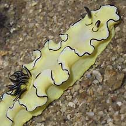
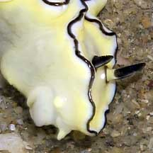
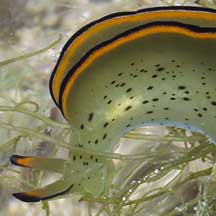
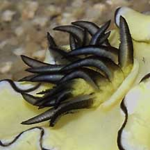
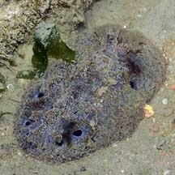

|
|
| sea slugs text index | photo index |
| Phylum Mollusca > Class Gastropoda > sea slugs |
| Slugs:
nudibranch, sea hare or sap-sucking slug? How to tell them apart? updated Jul 2020 |
| All these slugs
belong to Phylum Mollusca but come from
different Orders. They are often mistaken for one another. |
 |
 |
 |
|
Nudibranchs
Order Nudibranchia |
Sea hares
Order Anapsidea |
Sap-sucking
slugs
Order Sacoglossa |
 |
 |
 |
| In most only the rhinophores are obvious, although in others, the oral tentacles are also visible (they look like a moustache). | Usually two pairs of large tentacles are visible, a pair of flappy oral tentacles, and a pair of rhinophores. | Usually only one pair of rhinophores visible. |
 |
 |
 |
| Some have flowery gills on their backs. But these can be retracted into the body. And some nudibranchs don't have these external gills. Some nudibranchs also have a body made up of two flaps. | The gills are enclosed in the body mantle. In many, the body is made up of two flaps. | No external gills. In many, the body is made up of two flaps. |
| Nudibranchs have no external shells. | Some sea hares have internal shells. | Some sap-sucking slugs have external shells. |
| All nudibranchs are carnivores. Most eat immobile animals such as sponges, bryozoans and ascidians. | Sea hares eat seaweed and tend to be seasonally abundant in synchrony with blooms of their food source. | Sap-sucking slugs eat seaweed too and pierce the cells to suck out the juices. |
| More comparisons |
 Some nudibranchs don't have flowery gills on the back. |
 Some nudibranchs have a pair of long oral tentacles as well as rhinophores. |
 Some nudibranchs are large and resemble stones! |
| These are NOT nudibranchs or sea hares or sap-sucking slugs |


| how to tell apart hairy slugs and snails |